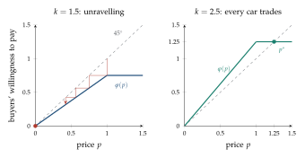
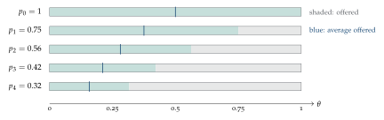

4.4. Asymmetric information: the market for lemons#
Now sellers observe quality and buyers do not. This section proves Akerlof’s result, shows what it does and does not depend on, and interprets the unravelling.
4.4.1. One price for all qualities#
Lemma 4.1 (One price)
When buyers cannot observe quality, all units that trade in equilibrium trade at the same price.
Proof of Lemma 4.1
Suppose units traded at two prices \(p<p'\). Buyers who pay \(p'\) cannot tell the units sold at \(p'\) from those sold at \(p\), so they would be willing to pay \(p'\) for either. A seller who was selling at \(p\) could ask \(p'\) instead and, with buyers in excess supply, find a buyer. Since the seller’s payoff is the price, he is strictly better off. So no unit trades at \(p\).
Remark 4.2
This is a “hand-waving” argument, as the slides say, because we have not specified a full game in which sellers name prices and buyers form beliefs about each price. Doing so (as in Wilson 1980) confirms the conclusion when buyers interpret any price as coming from a random seller; with other beliefs, a high price could be read as a sign of high quality, and that is precisely the idea of signalling in Chapter 5. A price can only carry information if asking it is costlier for low-quality sellers, and in this model it is not.
4.4.2. Akerlof’s theorem#
Theorem 4.1 (The market for lemons; Akerlof 1970)
Suppose sellers observe \(\theta\) and buyers do not, and \(1<k<2\). Then the equilibrium price is
Only units of quality \(\theta=0\) are traded; sellers of every unit with \(\theta>0\) keep it. Gains from trade of \((k-1)\theta\) are lost on every unit with \(\theta>0\), so the outcome is as inefficient as it can be.
Proof strategy (Theorem 4.1)
By Lemma 4.1 there is a single price. We find, for each candidate price \(p\), which units are offered (sellers know \(\theta\), so this is now a set of qualities), then what buyers will pay for a unit from that set (a truncated expectation, T1), and finally the highest price acceptable to buyers (T2). The key object is the function
buyers’ willingness to pay when the price is \(p\). A price is acceptable exactly when \(\varphi(p)\ge p\) (T3).
Proof of Theorem 4.1
Step 1: who sells. A seller of quality \(\theta\) sells at price \(p\) if and only if \(p\ge\theta\). So at price \(p\) the units offered are those with \(\theta\le p\): all qualities in \([0,\min\{p,1\}]\).
Why this step?
This is where private information enters. In Proposition 4.2 the seller’s comparison did not depend on \(\theta\); here it does, and only the owners of the worst units accept a given price.
Step 2: what buyers will pay (T1). Buyers know the units offered at \(p\) are those with \(\theta\le\min\{p,1\}\). A uniform distribution truncated to \([0,c]\) is uniform on \([0,c]\), with mean \(c/2\). So
Why this step?
Buyers are not pessimistic and not irrational. They simply use Bayes’ rule: knowing who is willing to sell at \(p\) tells them which units they could be buying.
Step 3: which prices are acceptable (T3). A price \(p>0\) is acceptable if and only if \(\varphi(p)\ge p\).
If \(0<p\le1\): \(\varphi(p)=kp/2<p\), because \(k<2\). Not acceptable.
If \(p>1\): \(\varphi(p)=k/2<1<p\). Not acceptable.
At \(p=0\), only units with \(\theta=0\) are offered and buyers value them at \(0\), so \(p=0\) is (weakly) acceptable.
Why this step?
This is where \(k<2\) is used. When we compare \(kp/2\) with \(p\) we divide by \(p\), so we must treat \(p=0\) separately; and the comparison of \(k/2\) with \(1\) needs \(k<2\). Missing the second case is how the lecture slides come to state the theorem without the condition \(k<2\).
Step 4: the equilibrium. The only acceptable price is \(0\), so \(p^*=0\). Sellers with \(\theta>0\) get \(\theta>0\) from keeping their unit and \(0\) from selling, so they keep it. Units with \(\theta=0\) trade, with both sides indifferent.
Step 5: efficiency. Every unit with \(\theta>0\) would generate \((k-1)\theta>0\) if traded, and none is. Total surplus is \(0\), against \((k-1)/2\) in the benchmarks.


Fig. 4.1 Buyers’ willingness to pay \(\varphi(p)\) against the price. Equilibrium is the highest price where \(\varphi\) is on or above the \(45^\circ\) line. Left: with \(k<2\), \(\varphi\) lies below the line for every \(p>0\), and the red path shows the price falling by a factor \(k/2\) each round. Right: with \(k>2\), \(\varphi\) lies above the line up to \(p=k/2\), and every unit trades.#
4.4.3. When the market survives#
Proposition 4.3 (Large gains from trade)
Suppose sellers observe \(\theta\) and buyers do not, and \(k\ge2\). Then the equilibrium price is \(p^*=k/2\) and every unit trades. The outcome is efficient.
Proof of Proposition 4.3
For \(0<p\le1\), \(\varphi(p)=kp/2\ge p\) because \(k\ge2\), so every such price is acceptable. For \(p>1\) all units are offered and \(\varphi(p)=k/2\), so \(p\) is acceptable if and only if \(p\le k/2\). The highest acceptable price is therefore \(k/2\ge1\). At that price every seller, even with \(\theta=1\), is willing to sell, so every unit trades.
The comparison is between the gains from trade \(k\) and how much quality varies. Buyers pay for the average unit offered; a seller of the best unit gives up \(1\). Selling the best unit is worth it when buyers’ value of the average unit, \(k/2\), is at least \(1\). When gains from trade are large, even the owners of the best units are happy to sell at a price that reflects average quality, and nothing unravels. Adverse selection is a problem when gains from trade are small relative to the spread of quality.
4.4.4. Interpreting the unravelling#
1. The spiral. The proof finds the equilibrium in one step, but the slides tell it as a story in rounds, which is worth making precise. Imagine buyers start by offering a price \(p_0\in(0,1]\). Only cars with \(\theta\le p_0\) are offered; buyers learn this and are willing to pay only \(\varphi(p_0)=kp_0/2\); at that lower price more owners withdraw; and so on.
Proposition 4.4 (The unravelling spiral)
Let \(p_{t+1}=\varphi(p_t)\) with \(p_0\in(0,1]\). If \(k<2\) then \(p_t=(k/2)^t p_0\to0\): each round the price falls by the same fraction \(1-k/2\). If \(k>2\), the price rises until it reaches \(k/2\). If \(k=2\), every \(p_0\in[0,1]\) is a resting point.
Proof of Proposition 4.4
While \(p_t\le1\), \(p_{t+1}=kp_t/2\), so by induction \(p_t=(k/2)^tp_0\). If \(k<2\) this stays in \((0,1]\) and tends to \(0\). If \(k>2\) the sequence grows geometrically until it exceeds \(1\), after which \(p_{t+1}=k/2\) for ever. If \(k=2\), \(p_{t+1}=p_t\).


Fig. 4.2 The spiral with \(k=1.5\). At price \(p_t\) only qualities in \([0,p_t]\) are offered (shaded). Their average is \(p_t/2\) (blue), which buyers value at \(0.75\,p_t\); that becomes the next price.#
The spiral is a way of understanding the equilibrium, not a claim that real markets move in rounds. It shows why no positive price can last: whatever buyers offer, the cars that are offered at that price are worth less to them than the price.
2. Buyers are not being pessimistic. It is tempting to read the result as “buyers fear the worst”. They do not. Buyers have correct beliefs about the distribution of quality and update them by Bayes’ rule. The problem is that, at any positive price, the units actually offered are worse than average, and buyers correctly take this into account. Nothing in the theorem relies on mistrust or hostility; as the slides put it, sellers simply know their outside option and walk away when the price is not right.
3. Why can’t good sellers just say so? A seller of a good car can announce “my car has quality \(0.9\)”. But so can the seller of a bad car, and it costs him nothing. An announcement that every type would make carries no information. This is the meaning of credible communication: a statement is credible only if it is backed by something that a seller of a bad unit would not want to provide (an inspection, a warranty, a costly signal). Without such a mechanism, a high-quality seller cannot separate himself from low-quality sellers, and prices cannot depend on quality.
4. Quality shows up in participation, not in prices. In an ordinary market, the price aggregates information (an idea associated with Hayek, 1945). Here, the only way quality affects the market is through who participates: the higher a seller’s quality, the higher the price he needs before he sells. So the price does carry information, but of the wrong kind: it tells buyers which units they will get, and the answer is always the worst ones.
5. The role of the assumptions. The stark conclusion uses the uniform distribution and linear payoffs. With other distributions the market may unravel only partly: some qualities trade and the best do not (Generalisations). The direction of the result is robust: whenever the informed side’s outside option rises with quality and quality cannot be verified, the units traded are worse than the units that exist, and some gains from trade are lost. As the slides say, the theorem should not be taken at face value; it describes a force, and the interesting question in any real market is what is holding that force back.
4.4.5. The running example#
With \(k=1.5\):
Information |
Price |
Cars traded |
Surplus |
|---|---|---|---|
Public |
\(1.5\,\theta\) |
all |
\(0.25\) |
Unknown to all |
\(0.75\) |
all |
\(0.25\) |
Private (sellers only) |
\(0\) |
only \(\theta=0\) |
\(0\) |
If the same cars were worth \(k=2.5\) times as much to buyers, all cars would trade at \(1.25\) even with private information.